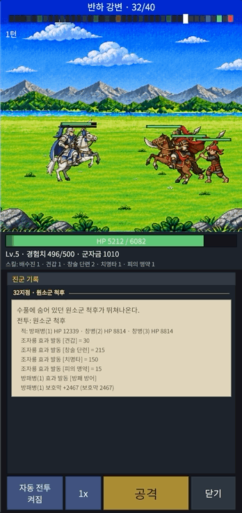
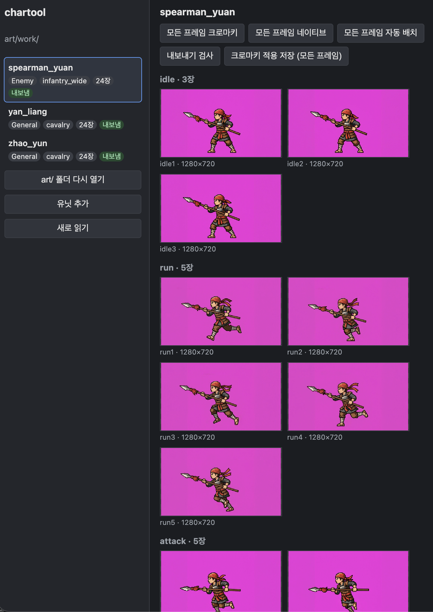

작업 목표
전투의 결과는 서버가 결정적으로 계산하고, 화면은 그 기록을 재생한다. 서버는 적을 슬롯 순서로만 알고 누가 어디에 서 있는지는 모른다. 이번 목표는 그 제약을 그대로 둔 채, 적이 여럿일 때 화면이 전장의 혼잡함을 표현하게 만드는 것이었다. 그리고 그 전투를 색 상자가 아니라 실제 병사 그림으로 보는 것이었다.
작업 결과
캐릭터 툴로 만든 원소군 창병 시트와, 그 창병 세 명을 상대하는 전투 장면이다.


공격자는 경로의 유닛에 막히지 않고 대상까지 곧장 달려간다.
맞은 쪽은 공격자 쪽으로 돌아서고 그 반대쪽으로 밀린다.
대기부터 분노 공격까지 일곱 가지 동작을 한 시트에 담았다.
캐릭터 툴에서 내보낸 시트를 에디터 버튼 하나로 게임에 넣는다.
다대일 전투를 네 가지 규칙으로 만들었다
기획 단계에서는 적들이 질서 있게 자리를 바꾸는 방식도 검토했지만, 원하는 그림이 "전장의 혼잡함"이라는 것을 기준으로 삼고 그 반대 방향으로 갔다. 규칙은 네 가지이고 전부 화면 쪽에 있다.
대상까지 곧장
공격자는 경로에 누가 서 있든 밀지 않고 지나쳐 대상의 사거리 자리까지 달린다. 지나쳐진 적은 공격자 쪽으로 돌아서서 자세를 고쳐 잡는 동작을 한 번 한다. 같은 편끼리는 반응하지 않는다. 노린 적이 넉백으로 뒤로 가 있으면 앞의 다른 적 사이를 뚫고 들어가는 그림이 된다.
공격자가 선 곳이 기준
맞는 순간 공격자가 어느 쪽에 있는지로 돌아설 방향을 정하고, 넉백과 그 뒤의 사슬 밀림도 공격자 반대쪽으로 간다. 조자룡 뒤로 돌아간 적이 치면 조자룡이 뒤돌아 맞고 앞으로 밀린다. 앞뒤에서 번갈아 맞는 장면이 여기서 나온다.
앞뒤 레인
슬롯마다 발 높이를 조금씩 다르게 두어 교차할 때 서로 스쳐 지나가게 했다. 그리기 순서는 발이 아래에 있는 쪽이 위에 오도록 매 순간 정한다. 레인 폭은 데이터 값 하나로 조절한다.
넉백 변주와 자석 사슬
넉백 거리에 ±10 %의 변주를 준다. 같은 전투를 다시 재생하면 같은 값이 나오도록 슬롯·턴·순번으로 정하는 결정적 변주다. 밀린 유닛 뒤에 선 유닛은 한꺼번에가 아니라 앞 유닛이 닿는 순간 차례로, 자석에 끌리듯 밀린다. 편을 가리지 않아 조자룡도 적의 사슬에 밀릴 수 있다.
붙어 있을 때, 빗나갔을 때, 반격할 때
이미 사거리 안이라 한 걸음도 디딜 수 없으면 달리며 찌르는 공격 대신 제자리 공격 동작을 쓴다. 전용 클립이 없는 병사는 분노 공격 클립으로, 그것도 없으면 일반 공격 클립으로 대신한다. 빗나간 공격에는 회피 동작과 효과음, 「회피」 글자가 붙고, 반격하는 쪽은 한 걸음 물러났다가 친다. 분노 공격을 쓰는 쪽은 붉게 반짝인다. 마지막 일격을 맞은 적은 피격 동작에서 바로 쓰러지며 사라진다.
원소군 창병을 캐릭터 툴로 만들어 넣었다
지금까지 전투 확인은 조자룡과 적 장수 안량, 그리고 색 상자뿐인 임시 병사로 했다. 세 명이 뒤엉키는 장면을 보려면 병사 그림이 필요해서 원소군 창병 시트를 먼저 만들었다. 붉은 두건을 두른 원소군 병사이고, 앞으로 세력마다 다른 병사 그림을 쓸 수 있도록 이름은 「병종_세력」 규칙으로 정했다.
프레임 24장을 캐릭터 툴에 넣었다
Art대기 3 · 달리기 5 · 공격 5 · 피격 2 · 쓰러짐 2 · 자세 2 · 분노 공격 5. 지난 작업에서 만든 캐릭터 툴이 크로마키, 축척, 팔레트, 박스 배치를 처리하고 시트와 클립 정보를 내보낸다.
기마 장수 옆에 세워 비례를 맞췄다
Scale보병 머리 크기 기준으로 나온 축척을 기마 조자룡 옆에 세워 보고 1.4배로 키웠다. 창이 긴 병종이라 넓은 보병 박스를 쓰고 몸통을 뒤쪽에 두어 찌르는 프레임의 창끝까지 박스에 들어가게 했다.
HP 바 높이를 시트에서 재게 했다
Import반입 도구가 시트의 대기 프레임에서 가장 높은 불투명 행을 재어 표에 적고, 게임이 그 값으로 머리 위 HP 바 높이를 정한다. 키가 다른 유닛마다 바가 머리 바로 위에 붙는다.
새 동작 두 가지를 툴에 추가했다
Clip다대일 전투에서 생긴 제자리 공격과 회피 동작을 캐릭터 툴과 반입 도구의 클립 목록에 더했다. 시트에 없으면 정해진 순서로 다른 클립이 대신하므로 지금 있는 시트는 그대로 쓸 수 있다.
에디터 하네스를 확인과 반입의 창구로 만들었다
연출을 고치고 확인하는 주기를 짧게 하려고 에디터 안의 전투 하네스를 여러 곳 보강했다. 이번 작업의 절반은 이 도구들 위에서 돌아갔다.
한 행동씩 넘기는 수동 전투
전투 중 하단 버튼 줄 위에 「자동 전투 켜짐/꺼짐」과 「공격」 버튼이 덮인다. 꺼 두면 한 유닛의 행동이 끝날 때마다 멈추고, 「공격」을 누를 때마다 다음 행동 하나만 진행된다. 턴 시작에 터지는 투창 같은 효과도 조자룡의 행동과 묶어 한 번으로 넘어간다. 진군 기록에는 행동마다 아군은 파란색, 적은 붉은색 구분선이 들어간다.
유닛 아트 반입 버튼
캐릭터 툴에서 내보낸 시트를 버튼 하나로 검사하고 복사하고 클립 표를 쓰고 스프라이트 카탈로그를 다시 만든다. 카탈로그 재생성을 에디터 안에서 직접 호출하므로 Unity를 닫을 필요가 없다. 새 시트를 받아 화면에서 보기까지 몇 분이면 된다.
적 시트 덮어쓰기와 오버라이드
아직 그림이 없는 병종(궁병 등) 자리에 다른 시트를 세워 볼 수 있다. 일반 병사는 평소 분노 공격을 쓰지 않으므로, 분노·연속 공격·회피·반격 확률을 강제로 올리는 오버라이드로 모든 클립을 확인했다. 지나침 반응은 로그 한 줄로 남긴다.
작업하면서 알게 된 것
서버가 위치를 모르는 것이 오히려 자유였다
누구를 치는지는 서버가 슬롯 순서로 정하고, 화면은 그 결과를 재생한다. 그래서 접근 경로, 방향, 밀림, 깊이는 전부 화면 쪽 결정이었고, 서버 계산과 저장된 전투 기록은 건드리지 않고 연출을 몇 번이고 바꿀 수 있었다.
목표를 한 단어로 적으니 규칙이 모였다
"혼잡함"이라는 기준을 세우자 직행·공격자 기준·깊이·변주라는 네 규칙이 같은 방향을 가리켰다. 정돈된 교대나 자리 만들기처럼 그 방향과 어긋나는 안은 에디터에서 보고 바로 걸러 냈다.
결정적 변주는 재생과 스킵을 같게 만든다
넉백 변주를 난수가 아니라 슬롯·턴·순번의 정수 해시로 정하면, 같은 전투를 다시 재생하거나 스킵해도 최종 배치가 같다. 연출에 우연을 넣으면서도 검증 가능성은 지킬 수 있었다.
비례는 같은 화면에 세워 보고 정했다
숫자 규칙으로 맞춘 축척보다 기마 장수 옆에 실제로 세워 보는 쪽이 빨랐다. 반입 버튼 덕에 한 번 고쳐 보는 데 몇 분씩만 들었다.
규칙 변경의 비용을 먼저 쟀다
반격 횟수 규칙을 바꾸는 안은 서버 계산, 검증 벡터, 재배포가 따라오고 실제 발생 빈도는 아주 낮았다. 그래서 초안만 기록해 두고 다음 서버 변경 묶음에서 다시 보기로 했다. 표시 쪽 규칙과 서버 쪽 규칙의 비용 차이를 기준으로 범위를 갈랐다.
보고서는 갱신하지 않고 새로 쓴다
단계마다 새 파일로 쓰고 첫 줄에 어느 보고서를 대체·보충하는지만 적는 규칙으로 바꿨다. 읽는 쪽도, 넘겨받는 쪽도 마지막 파일 하나면 된다.
작업 방식
기획은 대화로 잡고, 조사와 구현은 Claude Code에 단계별로 맡겼다. 단계마다 에디터 하네스에서 직접 보고 다음 단계를 정했다.
진행 순서
다대일 기획 → 읽기 전용 코드 조사
↓
수동 전투 패널 · 창병 시트 · 반입 버튼
↓
직행 → 공격자 기준 방향 → 깊이 레인 → 넉백 변주
↓
사슬 · 제자리 공격 · 회피 · 반격 · 쓰러짐
↓
대형·사거리 데이터화 → 광역 정리 → 문서단계마다 지킨 것
- 커밋마다 깨끗한 작업 트리에서 검사 스크립트와 에디터 시험을 돌렸다.
- 서버 전투 계산, 재생기, 기존 버튼의 동작은 건드리지 않는다고 미리 못 박았다.
- 하네스에서 저장한 연출 값은 코드와 섞지 않고 따로 데이터 커밋으로 넣었다.
- 채택하지 않은 안은 이유와 함께 결정 기록에 남겼다.
- 마지막에 릴리스 빌드, 서버 테스트, 스모크 테스트를 모두 돌린 커밋을 검증 커밋으로 적었다.
정리 및 결론
전투 시각화에 이어 다대일 전투까지 들어갔고, 병사 그림이 하나 생기면서 전투 화면이 처음으로 "게임처럼" 보이기 시작했다. 연출 값이 전부 데이터라 앞으로의 조정은 하네스에서 한다.
3줄 요약
- 여러 명이 뒤엉키는 다대일 전투를 화면 쪽 규칙 네 가지로 구현했다. 공격자는 대상까지 곧장 달리고, 방향과 밀림은 공격자가 선 곳을 따르며, 깊이 레인과 넉백 변주로 대열이 흐트러진다.
- 그 장면을 보기 위해 원소군 창병 스프라이트 시트 24장을 캐릭터 툴로 만들어 넣었고, 비례와 HP 바 높이를 시트에 맞췄다.
- 에디터 하네스에 한 행동씩 넘기는 수동 전투와 아트 반입 버튼을 더해, 연출을 고치고 확인하는 주기를 몇 분으로 줄였다.
다음 작업
분노 공격 종류와 장착
Engine조자룡의 분노 공격을 용담창·돌파·광역 세 종류로 나누고 출정 전에 하나를 장착한다. 돌파는 대열을 뚫고 지나가며 경로의 적을 모두 친다. 서버 계산이 바뀌므로 보류해 둔 반격·대상 규칙 초안과 함께 한 번에 처리한다.
실기기 확인
APK전투 시각화와 다대일 전투를 Galaxy A16에서 확인하고 반짝임·소리·카메라·페이드 값을 맞춘다.
궁병
Art원소군 궁병 시트를 만들고, 긴 사거리로 뒤 칸에서 쏘는 규칙과 화살 비행 연출을 넣는다.